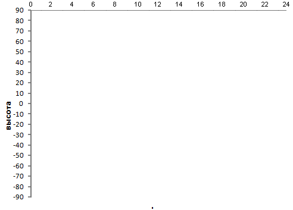

Сегодня:
Истинное звездное время на текущую дату в Гринвичскую полночь:
Graph height of star

Географическая долгота места:
°
'
"
Географическая широта места:
°
'
"
Прямое восхождение :
h
m
s
Склонение:
°
'
"
местное время-UT =
часа